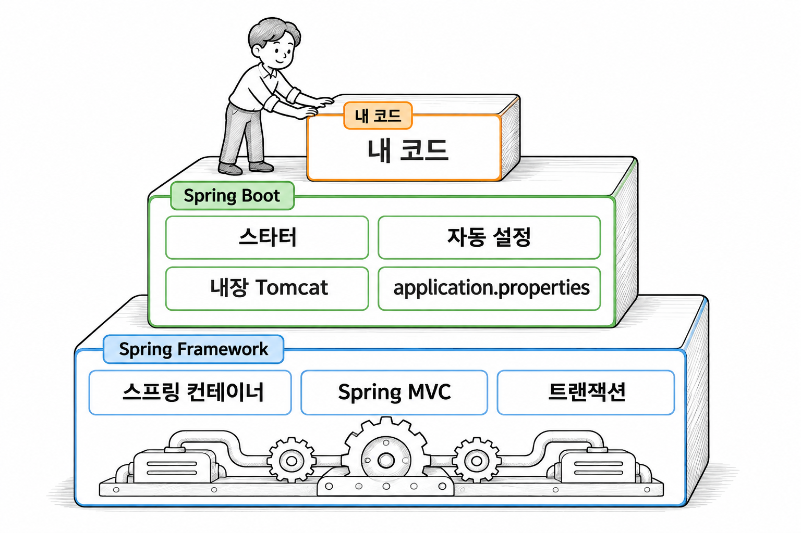
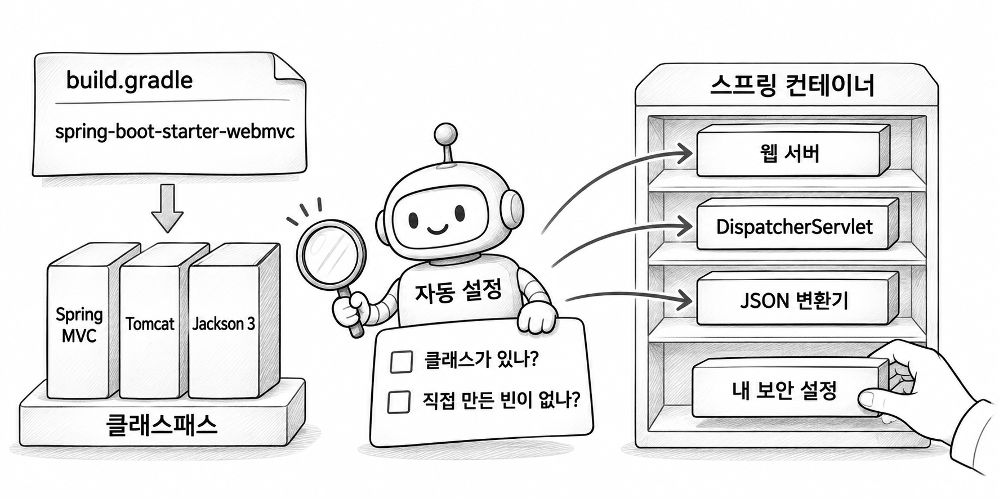
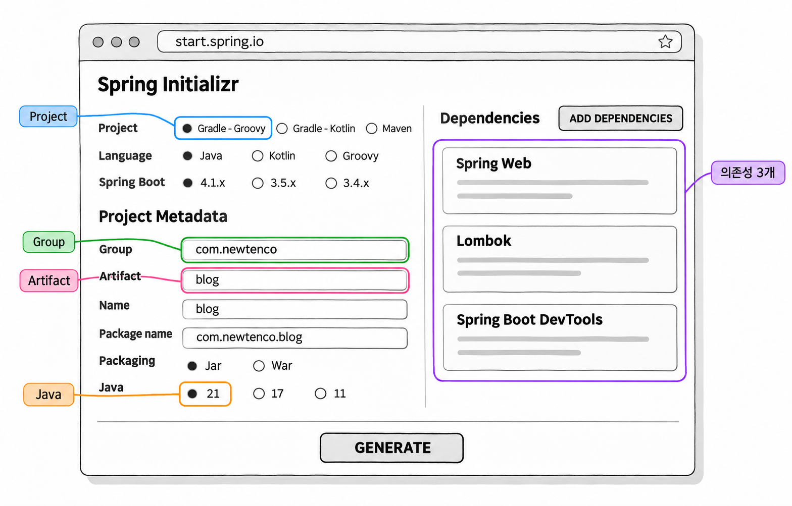
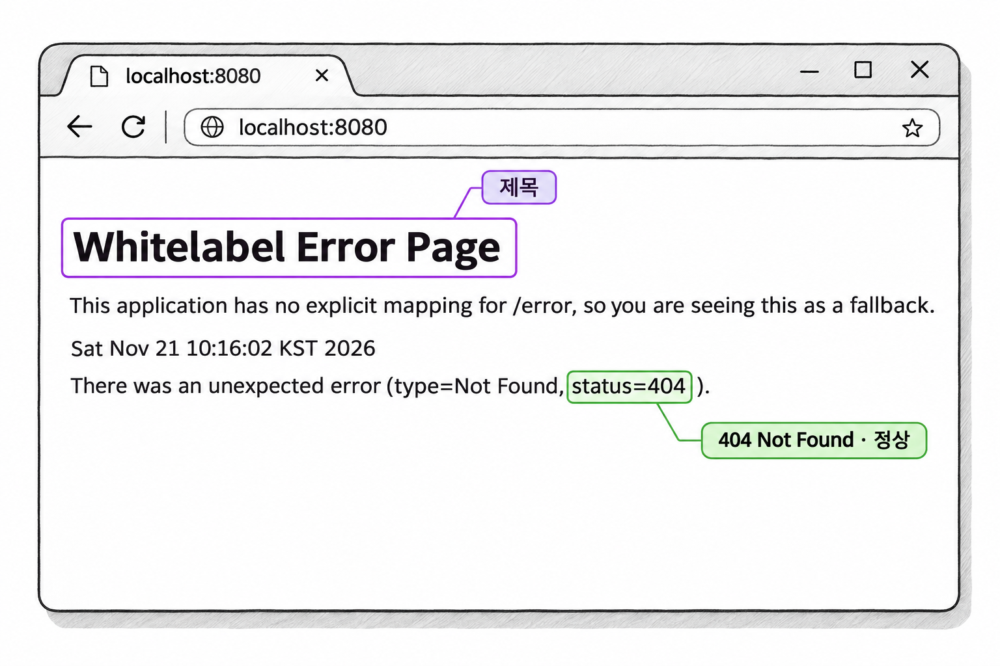

1장. Spring Boot 실행 환경
1. Spring Boot란?
1.1 Spring과 Spring Boot
Spring(스프링 프레임워크)은 자바로 서버 애플리케이션을 만들 때 쓰는 프레임워크입니다. 스프링을 쓰면 Controller, Service, Repository처럼 프로그램의 뼈대가 되는 객체를 개발자가 new로 직접 만들지 않습니다. 스프링이 이런 객체를 만들어 보관하다가 필요한 곳에 넣어 줍니다. 스프링이 이렇게 만들어 관리하는 객체를 빈(bean)이라고 하고, 빈을 담아 두는 곳을 스프링 컨테이너(container)라고 합니다. DTO나 예외처럼 요청을 처리할 때마다 새로 만드는 객체는 지금처럼 개발자가 new로 만듭니다. 어떤 객체를 빈으로 만들고 어떻게 넣어 주는지는 2장에서 자세히 다룹니다.
스프링은 기능이 많은 만큼 설정할 것도 많습니다. 스프링만 쓰면 웹 요청을 받을 서버를 따로 설치해야 합니다. 데이터베이스 연결이나 JSON 변환에 필요한 객체도 개발자가 하나하나 등록해야 합니다. 라이브러리끼리 버전이 맞는지도 직접 확인해야 합니다.
Spring Boot(스프링 부트)는 이런 준비 작업을 대신 맡는 도구입니다. 스프링 위에서 동작하며, 스프링만 쓸 때와 비교하면 다음 점이 다릅니다.
| 구분 | Spring만 쓸 때 | Spring Boot를 쓸 때 |
|---|---|---|
| 웹 서버 | Tomcat을 따로 설치하고 만든 프로그램을 그 위에 올림 | Tomcat이 애플리케이션 안에 들어 있어 main()만 실행하면 서버가 뜸 |
| 라이브러리 | 필요한 라이브러리와 버전을 하나씩 고름 | 스타터 하나로 묶어 추가하고 버전도 맞춰 줌 |
| 설정 | 필요한 빈을 직접 등록 | 들어 있는 라이브러리를 보고 필요한 빈을 자동으로 등록 |
| 설정값 | 여러 설정 파일에 흩어짐 | application.properties 한 곳에 모음 |

그림 1-1에서 보듯 Spring Boot는 Spring을 대신하지 않습니다. 요청 처리, 트랜잭션, 빈 관리 같은 실제 일은 여전히 Spring이 합니다. Spring Boot는 그 Spring을 곧바로 쓸 수 있게 준비할 뿐입니다.
이 책은 Spring Boot 4.1.3과 Java 21을 기준으로 합니다. Spring Boot 4는 Spring Framework 7 위에서 동작합니다. 인터넷에서 찾은 예제가 Spring Boot 3 기준이면 라이브러리 이름이나 설정 키가 다를 수 있습니다.
1.2 스타터와 자동 설정
스타터(starter)는 어떤 기능에 필요한 라이브러리를 한데 묶은 의존성입니다. 예를 들어 spring-boot-starter-webmvc 하나를 추가하면 Spring MVC와 내장 Tomcat이 들어오고, JSON 변환에 쓰는 Jackson 3도 함께 들어옵니다. 웹 API를 만들려는 개발자는 스타터 한 줄만 적으면 됩니다. Spring Boot 3까지는 이 스타터의 이름이 spring-boot-starter-web이었습니다.
자동 설정(auto-configuration)은 Spring Boot가 프로젝트에 든 라이브러리와 설정값을 보고 필요한 빈을 알아서 등록하는 기능입니다. 자동 설정은 조건이 맞을 때만 동작합니다. "이 클래스가 클래스패스에 있으면 등록한다", "개발자가 같은 종류의 빈을 직접 만들지 않았으면 등록한다" 같은 조건입니다. 클래스패스(classpath)는 프로그램이 실행될 때 JVM이 클래스와 설정 파일을 찾아보는 위치의 목록입니다. 내가 작성한 코드를 컴파일한 결과, resources 폴더의 파일, build.gradle로 추가한 라이브러리의 jar 파일이 모두 이 목록에 들어갑니다.
| 프로젝트에 있는 것 | Spring Boot가 자동으로 준비하는 것 |
|---|---|
| Spring MVC · Tomcat | 내장 웹 서버, 요청을 받아 컨트롤러로 보내는 객체 |
| Jackson 3 | 자바 객체와 JSON을 서로 바꾸는 변환기 |
| H2 드라이버 · JPA | 데이터베이스 연결(데이터소스), JPA 실행 환경 |

그림 1-2처럼 스타터와 자동 설정은 하는 일이 다릅니다. 스타터는 라이브러리를 들여오기만 합니다. 들어온 라이브러리를 빈으로 만들어 쓸 수 있게 하는 일은 자동 설정이 맡습니다.
"개발자가 직접 만들지 않았으면"이라는 조건은 9장에서 다시 만납니다. 9장에서 보안 필터 체인(SecurityFilterChain) 빈을 직접 등록하면 Spring Boot는 자기가 준비하던 기본 필터 체인을 등록하지 않습니다. 자동 설정은 기본값을 줄 뿐이고, 개발자가 직접 정한 설정이 항상 먼저입니다.
2. 프로젝트 만들기
2.1 Spring Initializr로 프로젝트 받기
Spring Initializr(스프링 이니셜라이저)는 Spring Boot 프로젝트의 뼈대를 만들어 주는 웹 서비스입니다. 브라우저에서 start.spring.io를 열고 값을 고르면 폴더 구조와 빌드 파일, Gradle 실행 파일이 든 압축 파일을 내려받을 수 있습니다. 다음 값을 넣습니다.
| 항목 | 값 |
|---|---|
| Project | Gradle - Groovy |
| Language | Java |
| Spring Boot | 4.1.x 중 가장 높은 버전 |
| Group | com.newtenco |
| Artifact | blog |
| Package name | com.newtenco.blog |
| Packaging | Jar |
| Java | 21 |
| Dependencies | Spring Web, Lombok, Spring Boot DevTools |
Spring Boot 버전 목록의 4.1.x는 어느 것을 골라도 됩니다. 나중에 build.gradle을 이 장의 예제로 덮어쓰면서 버전을 4.1.3으로 맞추기 때문입니다.
GENERATE 버튼을 누르면 blog.zip 파일을 내려받습니다. 압축을 풀고 폴더 이름을 server-spring으로 바꾼 뒤 IntelliJ IDEA에서 File > Open으로 이 폴더를 엽니다. IntelliJ가 build.gradle을 읽고 라이브러리를 내려받는 동안 오른쪽 아래에 진행 표시가 나옵니다. 컴퓨터에는 JDK 21이 설치되어 있어야 합니다.

생성형 예시 · 실제 실행 안 함
압축을 푼 폴더에는 다음 파일이 있습니다.
| 위치 | 하는 일 |
|---|---|
build.gradle | 플러그인, 라이브러리, Java 버전을 적는 빌드 파일 |
settings.gradle | 프로젝트 이름을 적는 파일 |
gradlew.bat · gradlew | Gradle을 따로 설치하지 않고도 Gradle을 실행하게 해 주는 파일(Windows용 · macOS와 Linux용) |
gradle/wrapper/ | gradlew.bat이 내려받을 Gradle 버전 정보 |
.gitignore | Git에 올리지 않을 파일 목록 |
src/main/java/com/newtenco/blog/BlogApplication.java | 메인 클래스 |
src/main/resources/application.properties | 설정값을 적는 파일 |
src/test/ | 테스트 코드 폴더 |
gradlew.bat과 gradlew를 Gradle 래퍼(wrapper)라고 합니다. 래퍼는 처음 실행할 때 gradle/wrapper/에 적힌 버전의 Gradle을 내려받아 씁니다. 그래서 컴퓨터마다 Gradle을 따로 설치하지 않아도 모두 같은 버전으로 빌드합니다.
2.2 build.gradle과 settings.gradle
Gradle(그레이들)은 라이브러리를 내려받고, 코드를 컴파일하고, 프로그램을 실행하는 빌드 도구입니다. Gradle이 할 일은 build.gradle에 적습니다. 이 책은 Groovy 문법으로 쓴 build.gradle을 씁니다.
코드 조각
plugins {
id 'java'
id 'org.springframework.boot' version '4.1.3'
id 'io.spring.dependency-management' version '1.1.7'
}plugins 블록은 Gradle에 기능을 더합니다. java 플러그인은 자바 코드를 컴파일하는 작업을 추가합니다. org.springframework.boot 플러그인은 bootRun 같은 Spring Boot 실행 작업을 추가하며, 여기 적은 4.1.3이 이 프로젝트의 Spring Boot 버전입니다.
io.spring.dependency-management 플러그인은 Spring Boot 4.1.3과 함께 쓰도록 검증된 라이브러리 버전 목록을 불러옵니다. 그래서 뒤의 dependencies에는 스타터나 Lombok의 버전을 적지 않습니다. 버전을 직접 적으면 오히려 Spring Boot와 맞지 않는 조합이 생길 수 있습니다.
코드 조각
group = 'com.newtenco'
version = '0.0.1-SNAPSHOT'
java {
toolchain {
languageVersion = JavaLanguageVersion.of(21)
}
}
repositories {
mavenCentral()
}group과 version은 이 프로젝트를 구분하는 이름과 버전입니다. toolchain은 Java 21로 컴파일하고 실행하라는 설정입니다. 컴퓨터에 JDK가 여러 개 있어도 Gradle은 이 설정에 맞는 JDK를 씁니다. repositories는 라이브러리를 내려받을 저장소를 정합니다. 여기서는 가장 널리 쓰는 Maven Central을 씁니다.
settings.gradle에는 프로젝트 이름을 적습니다.
코드 조각
rootProject.name = 'blog'rootProject.name은 Gradle 안에서 쓰는 프로젝트 이름입니다. 폴더 이름을 server-spring으로 바꿔도 Gradle 안에서 프로젝트 이름은 blog로 남습니다.
2.3 의존성 구성(implementation · compileOnly · runtimeOnly)
프로젝트가 쓰는 외부 라이브러리를 의존성(dependency)이라고 합니다. 의존성은 build.gradle의 dependencies 블록에 한 줄씩 적습니다.
기본 문법
dependencies {
구성이름 '그룹:이름'
}줄 앞의 구성 이름은 그 라이브러리가 언제 필요한지를 Gradle에 알립니다. 컴파일할 때만 필요한 라이브러리를 실행 파일에까지 넣으면 파일만 커집니다. 반대로 실행할 때 필요한 라이브러리를 빠뜨리면 서버가 뜨다가 멈춥니다.
| 구성 | 쓰는 때 | 이 책의 예 |
|---|---|---|
implementation | 컴파일과 실행 모두 | 스타터 |
compileOnly | 컴파일할 때만 | Lombok |
annotationProcessor | 컴파일 중 애너테이션을 읽어 코드를 만들 때 | Lombok |
runtimeOnly | 실행할 때만 | H2 드라이버(4장) |
developmentOnly | 개발 중 실행할 때만, 배포용 jar에는 빠짐 | devtools |
implementation은 가장 흔한 구성입니다. 코드에서 그 라이브러리의 클래스를 직접 쓰고, 실행할 때도 그 클래스가 있어야 할 때 씁니다.
runtimeOnly는 코드에서 클래스를 직접 부르지 않지만 실행할 때는 꼭 있어야 하는 라이브러리에 씁니다. 4장에서 추가할 H2 데이터베이스 드라이버가 그 예입니다. 우리 코드는 드라이버 클래스를 직접 쓰지 않고, 서버가 데이터베이스에 연결할 때만 드라이버를 찾습니다.
compileOnly는 반대로 컴파일할 때만 필요한 라이브러리에 씁니다. 다음 항의 Lombok이 대표적입니다.
2.4 Lombok과 devtools
Lombok(롬복)은 getter나 생성자처럼 모양이 정해진 코드를 애너테이션 하나로 만들어 주는 라이브러리입니다. Lombok은 컴파일할 때 코드를 만들어 클래스 파일에 넣으므로 실행할 때는 필요 없습니다. 그래서 compileOnly에 적고, 애너테이션을 읽어 코드를 만드는 일을 맡기려고 annotationProcessor에도 함께 적습니다.
코드 조각
compileOnly 'org.projectlombok:lombok'
annotationProcessor 'org.projectlombok:lombok'두 줄 가운데 하나만 적으면 동작하지 않습니다. compileOnly만 있으면 애너테이션은 인식하지만 코드가 만들어지지 않아서, getter를 부르는 곳에서 컴파일 오류가 납니다. Lombok 애너테이션은 2장부터 필요한 자리에서 하나씩 씁니다. IntelliJ IDEA에는 Lombok 플러그인이 기본으로 들어 있습니다. 프로젝트를 처음 열 때 애너테이션 처리(annotation processing)를 켜겠느냐고 물으면 켭니다.
devtools(데브툴즈)는 개발할 때 편의 기능을 주는 Spring Boot 모듈입니다. 가장 많이 쓰는 기능은 자동 재시작입니다. 서버가 켜진 상태에서 코드를 고치고 다시 컴파일하면 서버가 스스로 다시 시작합니다. IntelliJ에서는 Build > Build Project(Ctrl + F9)로 다시 컴파일합니다.
코드 조각
developmentOnly 'org.springframework.boot:spring-boot-devtools'developmentOnly로 적었으므로 devtools는 개발 중에 bootRun으로 실행할 때만 동작합니다. 배포용 jar 파일에는 들어가지 않으니 운영 서버에서 자동 재시작이 일어날 걱정은 없습니다. devtools가 켜져 있으면 실행 로그의 스레드 이름이 main 대신 restartedMain으로 나옵니다.
3. 서버 실행하기
3.1 메인 클래스와 @SpringBootApplication
Spring Boot 애플리케이션은 main() 메서드가 있는 클래스 하나에서 시작합니다. 이 클래스를 메인 클래스라고 합니다.
기본 문법
@SpringBootApplication
public class 클래스명 {
public static void main(String[] args) {
SpringApplication.run(클래스명.class, args);
}
}SpringApplication.run()은 스프링 컨테이너를 만들고, 자동 설정으로 빈을 등록한 다음, 내장 Tomcat을 띄웁니다. 그래서 main()에 이 한 줄만 있어도 서버 전체가 뜹니다. 첫 번째 인자로 넘긴 클래스가 설정의 출발점이 됩니다.
@SpringBootApplication은 애너테이션 세 개를 합친 것입니다.
| 포함된 애너테이션 | 하는 일 |
|---|---|
@SpringBootConfiguration | 이 클래스가 설정 클래스임을 알림 |
@EnableAutoConfiguration | 1.2항의 자동 설정을 켬 |
@ComponentScan | 이 클래스가 있는 패키지와 그 하위 패키지에서 빈으로 만들 클래스를 찾음 |
@ComponentScan이 메인 클래스의 패키지부터 찾기 때문에 메인 클래스의 위치가 중요합니다. 메인 클래스는 com.newtenco.blog 패키지에 둡니다. 앞으로 만들 클래스는 모두 그 아래 패키지(com.newtenco.blog.board, com.newtenco.blog.user 등)에 둡니다. 메인 클래스보다 바깥 패키지에 만든 클래스는 스프링이 찾지 못합니다. 패키지 구조와 빈을 찾는 방식은 2장에서 직접 확인합니다.
3.2 gradlew.bat bootRun
지금까지 본 파일을 모두 모아 서버를 띄웁니다. Initializr가 만든 파일을 다음 내용으로 덮어씁니다.
예제 1-1 — Spring Boot 서버 띄우기
파일명: build.gradle
plugins {
id 'java'
id 'org.springframework.boot' version '4.1.3'
id 'io.spring.dependency-management' version '1.1.7'
}
group = 'com.newtenco'
version = '0.0.1-SNAPSHOT'
java {
toolchain {
languageVersion = JavaLanguageVersion.of(21)
}
}
repositories {
mavenCentral()
}
dependencies {
implementation 'org.springframework.boot:spring-boot-starter-webmvc'
compileOnly 'org.projectlombok:lombok'
developmentOnly 'org.springframework.boot:spring-boot-devtools'
annotationProcessor 'org.projectlombok:lombok'
// 테스트 (src/test 폴더에서만 사용)
testImplementation 'org.springframework.boot:spring-boot-starter-webmvc-test'
testRuntimeOnly 'org.junit.platform:junit-platform-launcher'
}
tasks.named('test') {
useJUnitPlatform() // 테스트를 JUnit 5로 실행
}
tasks.withType(JavaCompile).configureEach {
options.encoding = 'UTF-8'
}
bootRun {
jvmArgs '-Dfile.encoding=UTF-8', '-Dstdout.encoding=UTF-8', '-Dstderr.encoding=UTF-8'
}파일명: settings.gradle
rootProject.name = 'blog'파일명: .gitignore
build/
.gradle/
.idea/
*.iml
out/
bin/파일명: src/main/java/com/newtenco/blog/BlogApplication.java
package com.newtenco.blog;
import org.springframework.boot.SpringApplication;
import org.springframework.boot.autoconfigure.SpringBootApplication;
@SpringBootApplication
public class BlogApplication {
public static void main(String[] args) {
SpringApplication.run(BlogApplication.class, args);
}
}파일명: src/main/resources/application.properties
server.port=8080
spring.servlet.encoding.charset=UTF-8
spring.servlet.encoding.force=trueapplication.properties는 Spring Boot의 설정값을 키=값 형태로 적는 파일입니다. server.port는 서버가 요청을 받을 포트 번호입니다. spring.servlet.encoding.charset은 요청과 응답의 문자 인코딩을 UTF-8로 정하고, spring.servlet.encoding.force는 응답에도 UTF-8을 강제로 적용합니다. 두 설정은 한글 글 제목이 깨지지 않게 하려고 넣었습니다.
두 인코딩 설정의 이름은 Spring Boot 3까지 server.servlet.encoding.charset과 server.servlet.encoding.force였고, Spring Boot 4.0부터 지금 이름으로 바뀌었습니다. 다른 자료에서 예전 이름을 보면 새 이름으로 바꿔 씁니다.
testImplementation과 testRuntimeOnly는 src/test 폴더의 테스트 코드에서만 쓰는 의존성입니다. Initializr가 만든 테스트 파일이 컴파일되도록 남겨 둡니다. 테스트 코드는 25장에서 직접 작성합니다.
build.gradle을 덮어쓰면 IntelliJ 오른쪽 위에 코끼리 모양의 Load Gradle Changes 버튼이 나옵니다. 이 버튼을 눌러 바뀐 의존성을 IntelliJ에 반영합니다.
bootRun은 코드를 컴파일한 뒤 메인 클래스를 실행하는 Gradle 작업입니다. IntelliJ 아래쪽 Terminal 탭을 열면 PowerShell이 server-spring 폴더에서 열립니다. 다른 곳에서 열었다면 먼저 server-spring 폴더로 이동합니다.
.\gradlew.bat bootRunPowerShell은 현재 폴더의 실행 파일을 이름만으로는 실행하지 않습니다. 그래서 앞에 .\를 붙입니다. 이 책에서 gradlew.bat bootRun이라고 쓰면 이 명령을 가리킵니다.
실행 결과
처음 실행할 때는 Gradle과 라이브러리를 내려받느라 몇 분이 걸릴 수 있습니다. 로그에 다음 줄들이 보이면 서버가 뜬 것입니다. 시간과 PID 숫자는 실행할 때마다 다르고, Java 세부 버전은 설치한 JDK에 따라 다릅니다.
Starting BlogApplication using Java 21.0.10 with PID 12345
Tomcat initialized with port 8080 (http)
Tomcat started on port 8080 (http) with context path '/'
Started BlogApplication in 2.1 seconds (process running for 2.5)브라우저에서 http://localhost:8080을 열면 Whitelabel Error Page와 함께 404(Not Found)가 보입니다. 아직 요청을 처리할 컨트롤러를 만들지 않았으므로 404가 나오는 것이 정상입니다. 서버가 요청을 받아 "그런 주소는 없다"고 답했다는 뜻이니, 서버는 제대로 떠 있습니다.

생성형 예시 · 실제 실행 안 함
3.3 실행 로그 읽기와 서버 끄기
실행 로그 한 줄에는 정보가 정해진 순서로 담깁니다. 3.2항의 실행 결과는 각 줄에서 메시지 부분만 옮긴 것이고, 터미널에서는 한 줄이 다음처럼 길게 보입니다.
2026-11-21T10:15:30.123+09:00 INFO 12345 --- [ restartedMain] com.newtenco.blog.BlogApplication : Started BlogApplication in 2.1 seconds (process running for 2.5)| 부분 | 예 | 뜻 |
|---|---|---|
| 시각 | 2026-11-21T10:15:30.123+09:00 | 로그를 남긴 시각 |
| 레벨 | INFO | 로그의 중요도. 문제가 생기면 WARN이나 ERROR로 나옴 |
| PID | 12345 | 이 서버 프로세스의 번호 |
| 스레드 | restartedMain | 로그를 남긴 스레드. devtools가 켜져 있어 main 대신 이 이름이 나옴 |
| 로거 | com.newtenco.blog.BlogApplication | 로그를 남긴 클래스. 이름이 길면 o.s.boot.tomcat.TomcatWebServer처럼 패키지를 앞 글자로 줄여 표시함 |
| 메시지 | Started BlogApplication ... | 실제 내용 |
서버가 떴는지는 메시지 네 줄로 확인합니다. Starting BlogApplication은 애플리케이션이 시작했다는 뜻이고, 사용하는 Java 버전도 여기서 볼 수 있습니다. Tomcat started on port 8080은 내장 Tomcat이 8080번 포트에서 요청을 기다린다는 뜻입니다. 마지막 Started BlogApplication이 나오면 빈 등록까지 모두 끝나 요청을 받을 준비가 된 것입니다. 문제가 생기면 레벨이 ERROR인 줄과 함께 원인이 적힌 긴 오류 내용이 출력됩니다. 오류 내용을 위에서 아래로 읽으며 Caused by:로 시작하는 줄을 보면 원인을 빨리 찾을 수 있습니다.
로그 아래쪽에는 Gradle 진행 표시가 남아 있습니다.
<==========---> 80% EXECUTING [15s]
> :bootRun진행 표시가 EXECUTING에서 멈춘 것처럼 보여도 정상입니다. 서버는 요청을 기다리며 계속 실행 중이고, bootRun 작업은 서버가 꺼져야 끝납니다.
서버를 끄려면 서버를 띄운 터미널에서 Ctrl + C를 누릅니다. 일괄 작업을 끝내시겠습니까 (Y/N)?라고 물으면 Y를 입력하고 Enter를 누릅니다. gradlew.bat이 배치 파일이라서 Windows가 한 번 더 확인하는 것입니다. 프롬프트가 다시 나타나면 서버가 꺼진 것입니다. 이때 브라우저에서 http://localhost:8080을 새로 고치면 연결할 수 없다는 화면이 나옵니다.
서버를 끄지 않은 채 다른 터미널에서 다시 실행하면 새로 띄운 서버가 다음 오류를 내고 멈춥니다.
Web server failed to start. Port 8080 was already in use.8080번 포트를 이미 다른 프로그램이 쓰고 있다는 뜻입니다. 대부분은 앞서 띄운 서버가 다른 터미널이나 IntelliJ 실행 창에 남아 있는 경우입니다. 그 서버를 Ctrl + C로 끈 뒤 다시 실행합니다.